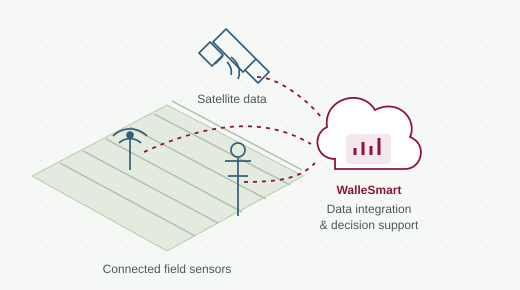

An interoperable cloud platform connecting farm sensors, satellite imagery and weather data to agricultural decision tools in Wallonia.
Research contribution
Scalable data processing and integration of heterogeneous agricultural data, developed and evaluated with real farms and weather stations.
Platform & field evaluation 2 documented resources
Cloud architecture tested with agricultural data
Roukh and Mahmoudi evaluated WALLeSmart with data from 30 dairy farms and 32 weather stations in Wallonia. The published architecture combines real-time and batch processing, a modular plugin system and agricultural data exchange.
Applications farmers can use
The platform provides a shared sign-in, a personalised dashboard, data-sharing consent controls and access to agricultural applications. CRA-W confirms that W@llHerbe is available through WALLeSmart for daily grass-biomass estimates.